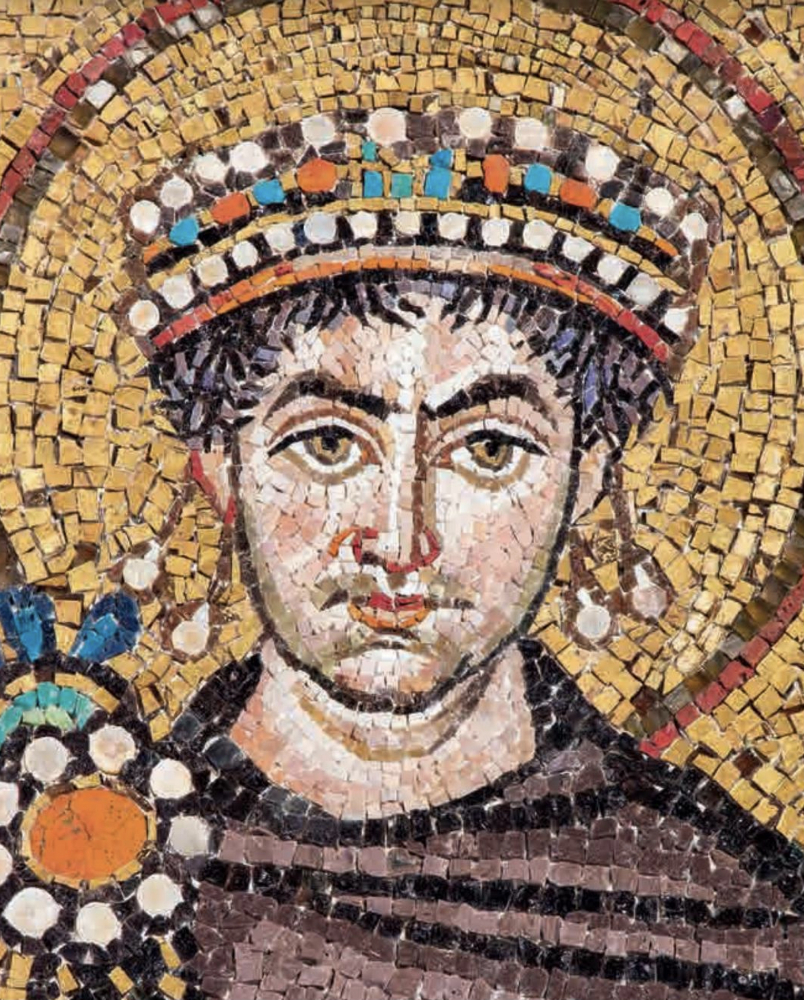

 Debate 1: Justinian |
Proposition:
Justinian was the greatest emperor of the fifth and sixth
centuries
Remember:
you will be called upon to answer at
least one of the items listed below as part of the debate; you may
(should) also take
part in the counterargument section if you have things to say that
differ from what your
teammates have said.
Some notes: in order to make your argument, it
would make sense to compare Justinian to other emperors of the fifth
and sixth
centuries. Especially if you are
on Team 2, you might want to bring in an alternative choice. I would think that part of your general
argument would have to revolve around a definition of the term
"greatest", which I leave you to determine.
Debate:
Team 1:
argue for the Proposition
Team 2:
argue against the Proposition
Assigned
questions - Team 1:
1. Background - Explain Justin's and Justinian's background and Justinian's rise during the reign of Justin.
2. Background
- Describe the cause of the Nika
riots, and their aftermath.
3. Background
- Explain the Justinianic
legal code, its various parts, and its significance.
4. Presentation
of the proposition: what is the topic? what is the basis of your argument?
5. Arguments
- select one significant
argument, and explain what it means
6. Arguments
- select one significant
argument, and explain what it means
7. Arguments
- select one significant
argument, and explain what it means
8. Do
the summary, summarizing your team's
arguments and state why they are preferable (you can't do this ahead of
time).
Assigned
questions - Team 2:
1. Background
- Describe the career of
Theodora, both before and after she became empress.
2. Background
- Describe Justinian's war
of reconquest of the west
3. Background
- Who was Procopius of Caesarea, what works did he write, and how do they influence our opinions about Justinian?
4. Presentation
of the proposition: what is the topic? what is the basis of your argument?
5. Arguments
- select one significant
argument, and explain what it means
6. Arguments
- select one significant
argument, and explain what it means
7. Arguments
- select one significant
argument, and explain what it means
8. Do
the summary, summarizing your team's
arguments and state why they are preferable (you can't do this ahead of
time).
Primary source
evidence
A number of primary sources relating to Justinian can be found on the web, many of them at the Internet Medieval Sourcebook: http://www.fordham.edu/halsall/sbook1c.html - Justinian
The historian Procopius of Caesarea (died after 562) was a contemporary of Justinian, was secretary to Justinian's general Belisarius, and thus served in many of the military campaigns of Justinian's reign. He wrote a variety of historical works about the reign of Justinian: these include the Buildings (De aedificiis) the History of the Wars (De bellis), and the Anecdota (more commonly known as the Secret History). The Buildings and the Wars seem to be official works written for the court, and tell of events favorable to Justinian; the Secret History is usually explained as expressing Procopius' secret frustration at having to write such favorable things, and is radically negative as a result.
If you like gossip and scandal, you may certainly read the whole of the Secret History (especially if you are on Team 2!); but I suggest that you especially read the sections on the Internet Medieval Sourcebook. I also suggest that you read the selections from the Wars and the Buildings at the same site. You can have a look at some of the laws there if you like.
The complete text of the Buildings can be found, with a table of contents, at http://penelope.uchicago.edu/Thayer/E/Roman/Texts/Procopius/Buildings/home.html
Links to information on Justinian
Read ch. 14, "Justinian and the End of Antiquity," in A.D. Lee, From Rome to Byzantium AD 363 to 565: The Transformation of Ancient Rome (Oxford: OUP, 2013), pp. 286-300. Available as LeeJustinianEndAntiquity2013.pdf in Canvas Files, or online via IUCAT.
A good, brief, biography of Justinian can be found here: https://web.archive.org/web/20220321210828/http://www.roman-emperors.org/justinia.htm.
I do NOT particularly recommend the Wikipedia article on
Justinian.